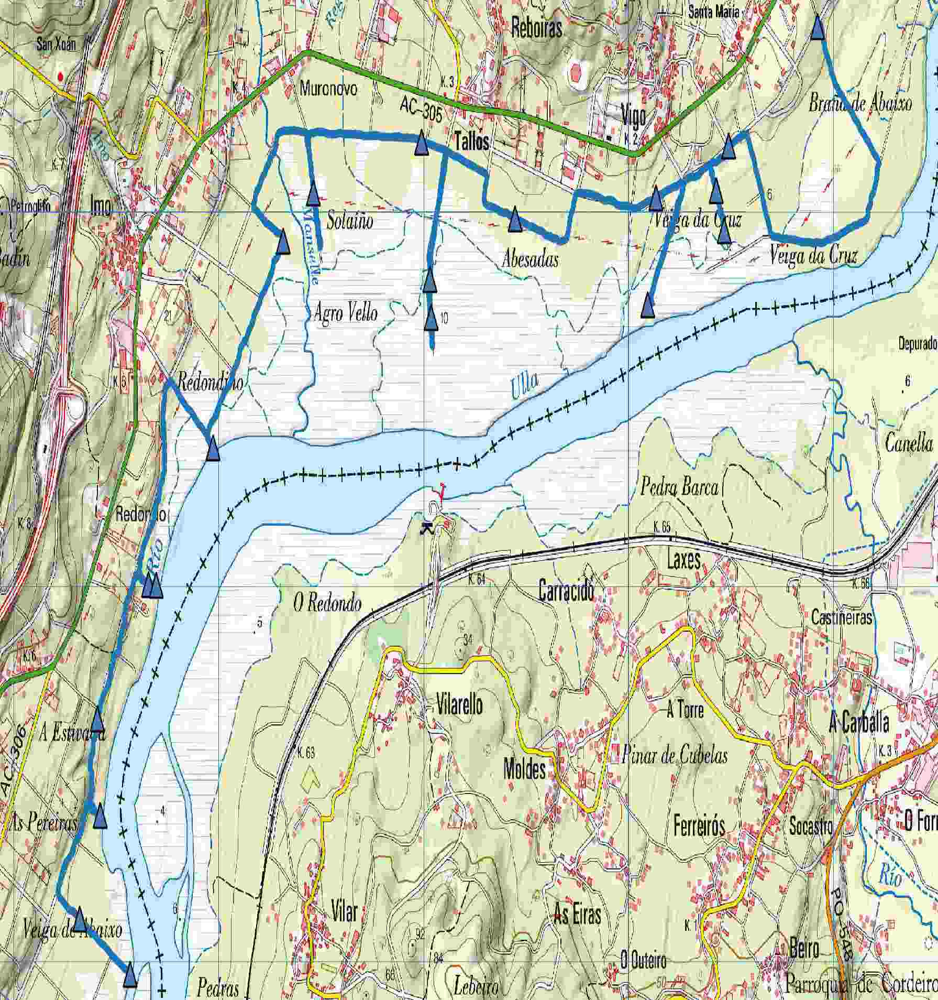
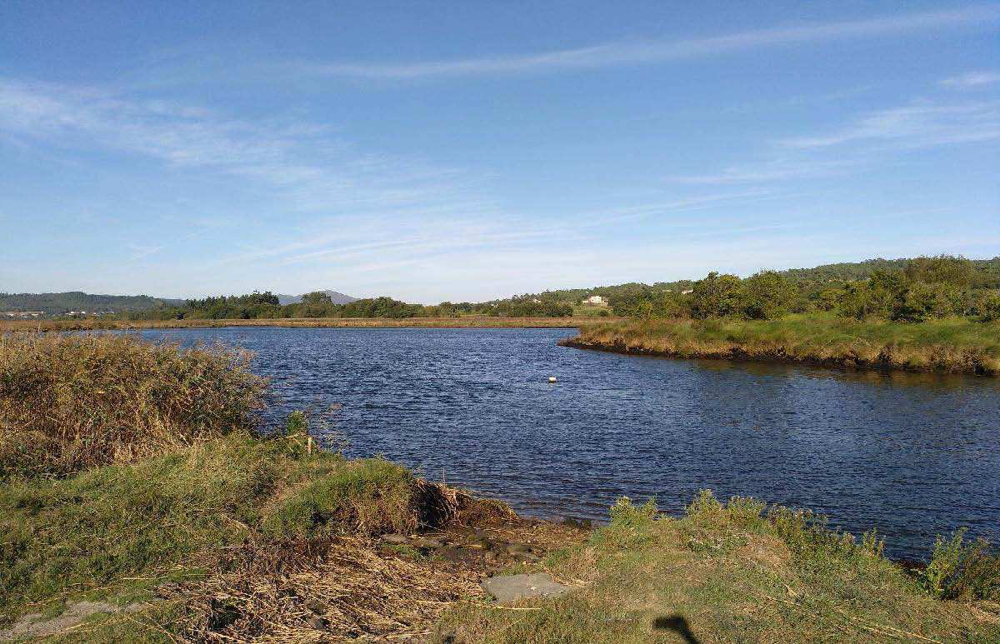
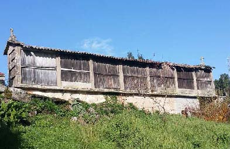
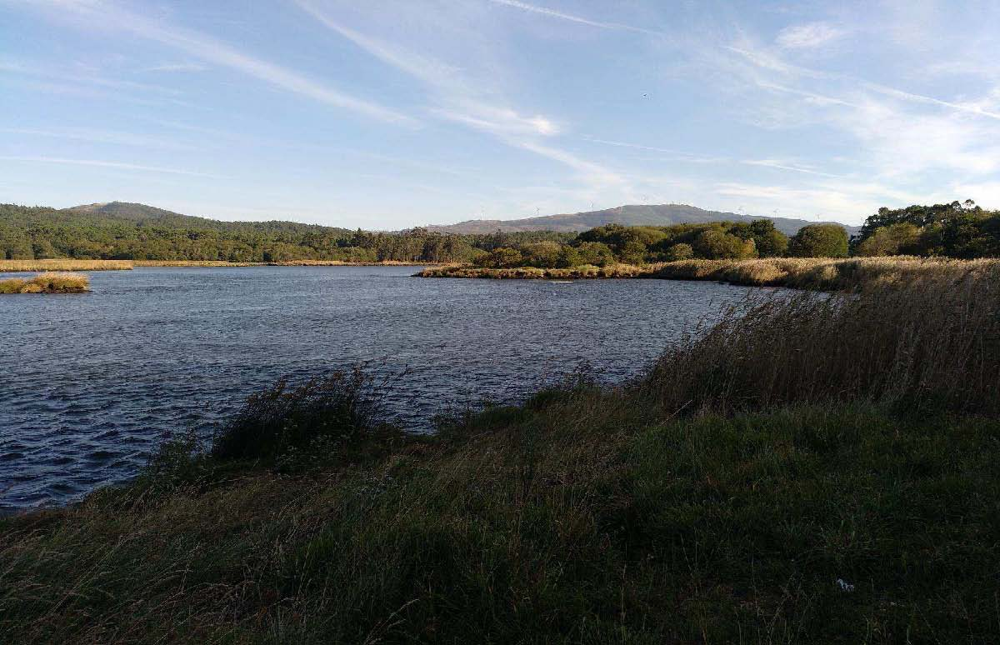
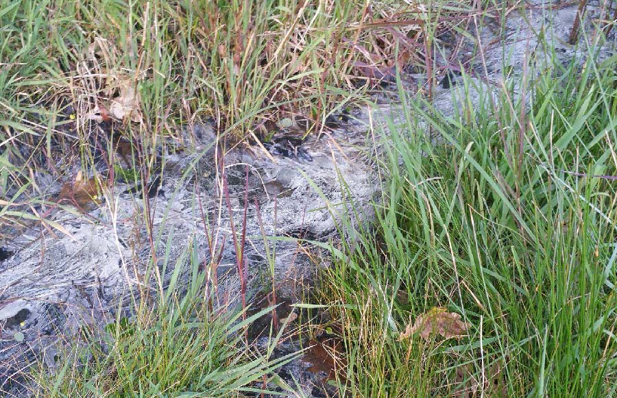
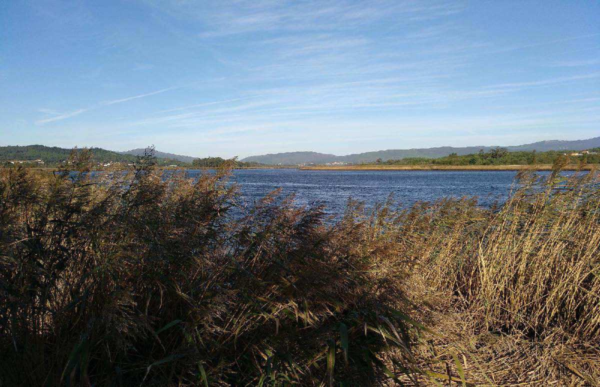
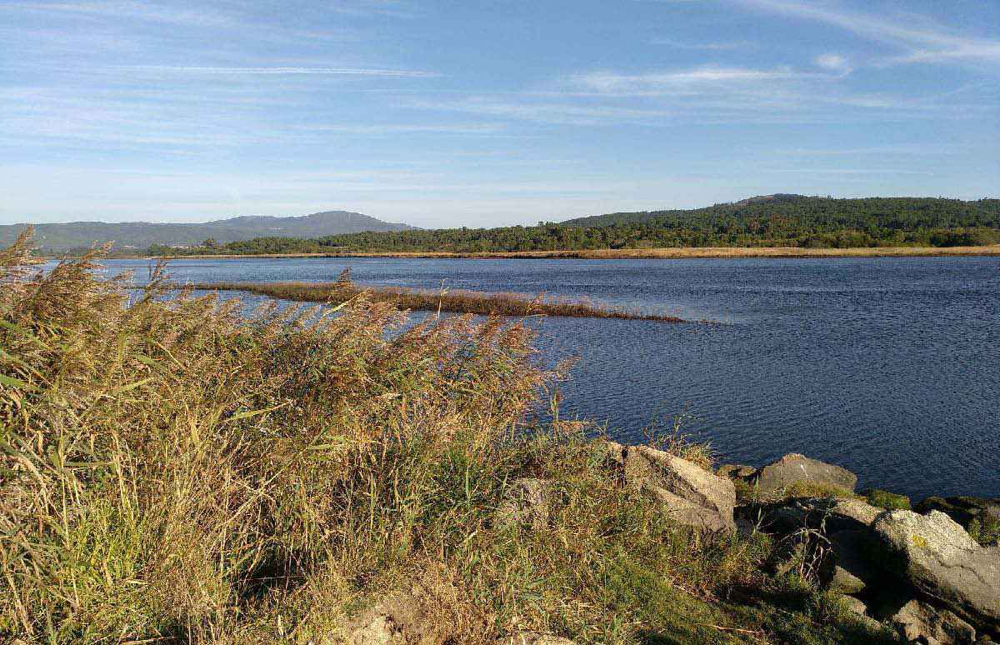
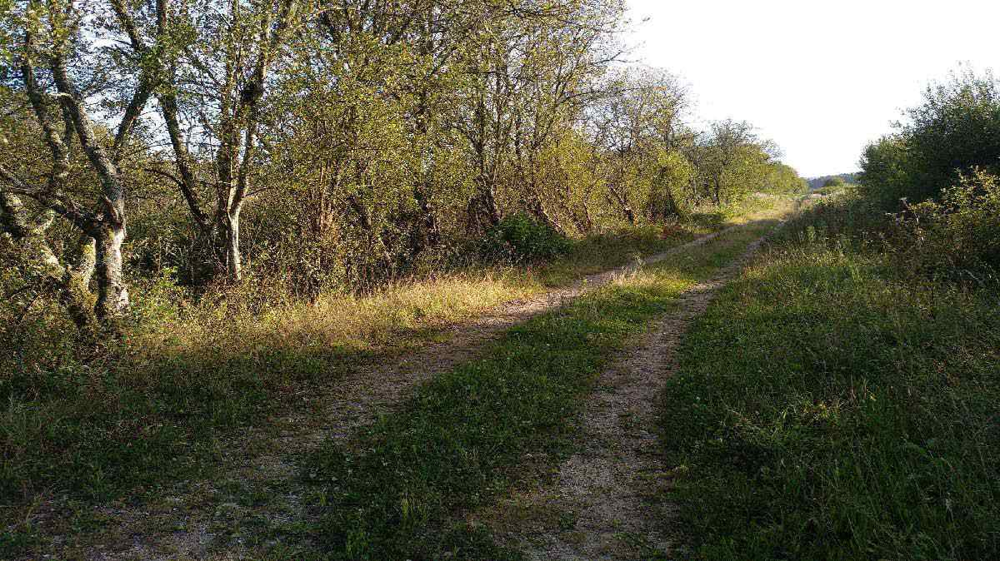
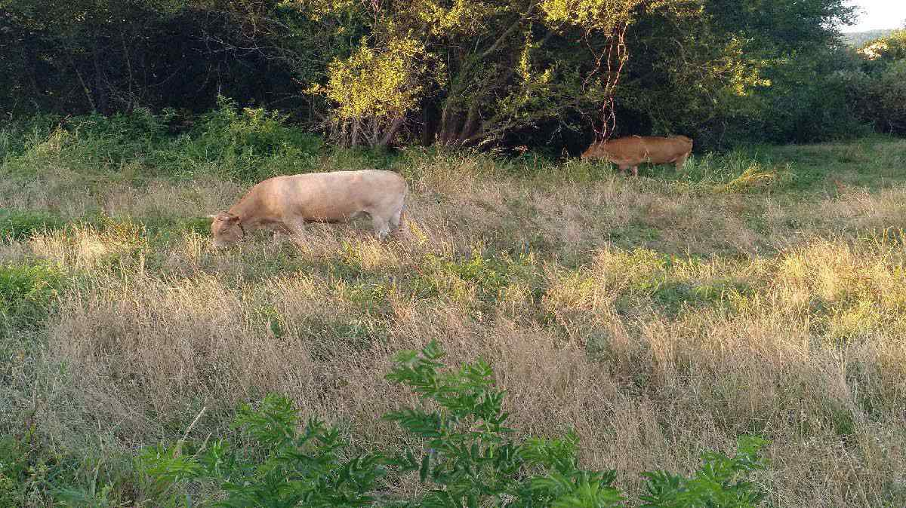
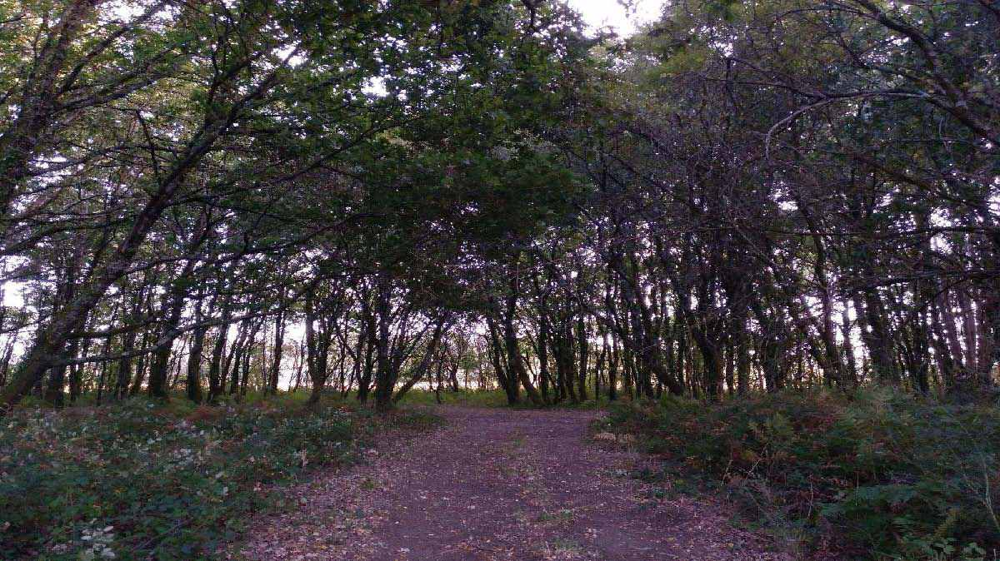

Ruta que percorre as Brañas de Laíño, un dos espazos húmidos máis extensos, descoñecidos e de maior valor ambiental de Galicia.
| Inicio | Rio Vello, Bexo |
| Fin | Cancela abrea |
| Distancia | 10,78Km |
| Tipo | Lineal |
| Duración | 2h 30min |
| Dificultade | Baixa |

Río Vello de Bexo
“Esta pequena illa que compartimos co Concello de Rianxo, localízase pasado O Redondo, meandro que hai no leito do río, no seu camiño cara o mar da Arousa.” “Iniciamos o percorrido no Río Vello de Bexo, coñécese con este nome a un brazo do río Ulla que salva a Insua de Bexo.”

Aldea de Bexo
“ A xente que traballaba na veiga usabao como un reloxio de sol, pois mirando a sombra proxectada polas súas tellas sobre os muros sabían se eran horas de xantar. ” “Neste primeiro tramo da ruta ao lonxe divisamos a aldea de Bexo, onde destaca o Hórreo das Pías, o máis grande do municipio, que ten sete claros e mide 15m de longo, 2 de ancho e 3 de alto.”

Cabodeiras, o Bico e o Redondo
“ Terra de mariñeiros, que amarraban os galeóns e as dornas en Cabodeiras, extremo da veiga moi afastado da aldea. O Redondo é o meandro no que as augas do Ulla viran cara a Insua de Bexo. A punta de terra na que remata o longo arco que describe o río desde O Redondo ata A Insua, coñécese como O Bico. A pesar de que a erosión das augas foi desgastando o terreo, aínda se observa no mapa topográfico ou na fotografía aérea.” “Cabodeiras, O Bico e O Redondo forman parte do Porto de Bexo.”

A fonte do mineral
“ Pedro Gómez de Bedoya na Historia universal de las fuentes minerales de España do ano 1765 dedica media ducia de páxinas a comentar as propiedades destas augas “cuyo caudal sale a Oriente a borbollones, fría y muy clara, manando la cantidad de agua, que puede hechar una teja, quando llueve bien”. Di que o sabor é astrinxente e que bañando nela unha moeda de prata ponse denegrida. Afirma que contén nitro e vitriolo, que curou dos herpes ó cura de Laíño e que sandou a un impedido que puido abandonar as muletas. Gregorio de Hermida e Diego Ballesteros del Mazo (donos dos Pazos de Lestrobe e Tarrío respectivamente) saíndo a cazar por estas paraxes, bañaron alí un cabalo con sarna e mandaron tamén que se metera na fonte o criado, que tiña unha úlcera antiga nunha perna. Sandaron os dous. No curioso Tratado de las enfermedades más frecuentes de las gentes del campo (1776), na táboa “De las fuentes marciales o vitriolicas”, figuran tres no Reyno de Galicia, entre elas La fuente de Layno, en Bejo, a cinco leguas de Santiago. Está tamén a nosa fonte no Tratado práctico de la gota (1791) onde se fala das marabillosas propiedades das súas augas para curar a enfermidade e no Manual Geográfico Administrativo de la Monarquía Española de 1844, apartado de “Aguas Minerales”. Rosalía, que viviu tamén neste país de auga, nun dos seus recontos de ausencias despídese antes que nada dos ríos e das fontes. Era amante delas e hai un poema no que dorme á súa beira. Eusebio Lorenzo, no primeiro poema do seu primeiro libro, promete “A eternidade para aquel que xorde en primavera de dentro das fontenlas.” “Nas brañas de Bexo, en Anguieiro (Anquieiro na fala nosa) está A Fonte Mineral ou Fonte do Mineral, nunhas campías preto do río.”
Punto de observación de aves
“Nela aniña unha subespecie da Escribenta das Canaveiras (Emberiza schoeniclus subs.lusitanica). É un endemismo da Península Ibérica. Tamén se poden ver aquí outras aves ameazadas como a Folosa acuática ou o Picanzo Vermello. Máis comúns son a garza, a cerceta, a aguia perdiceira, o gabián, o vichelocrego, o cardeal e o martiño peixeiro.” “A braña alberga unha riqueza ambiental de primeira magnitude.”

A Brañiña
“En Imo, atopamos a Brañiña, lugar de baño da mocidade, a pesares do medo que había pois decíase que o pozo desta non tiña fondo porque non eran capaces de chegares a el de forma natural. Tamén había certo temor a meterse no río grande o 25 de xullo, porque se dicía que pasaba o Apóstolo arrasteando pesadas cadeas que tiraban dos avezados nadadores.” “En Imo, atopamos a Brañiña, lugar de baño da mocidade, a pesares do medo que había... ”
Camiño
“Os vieiros están flanqueados por ameneiros e salqueiros e as terras salpicadas de Thalictrum speciossimum, Scirpus pungens (tipo de xunco ameazado de extinción a nivel mundial), herba salgueira, ulmaria, lirios, lisimaquia, frundio, mentas e orquídeas.Cantos populares españoles” de Francisco R. Marín. En Padrón había tecedores de liño, de la e de xunco. Este usábase para facer corozas, capas e polaina ” “Entre os escritos inéditos de Rosalía, recollidos por Naya Pérez, aparece a copla “elas de Laíño son, collen o xunco na braña, vano vender a Padrón ”. ”
Prados
“Durante anos foi unha despensa, ata as aldeas subíase a herba en cestos e desde Cordeiro (Valga) viñan buscala en barcas. Terra fértil que inmortalizou Rosalía de Castro en Cantares Gallegos: “Cál se enxugan de camiño os herbales de Laíño!” Agora medraron os canavais e as espadañas, onde antes se apañaba herba para o gando. Famosos foron os bois cebóns de Laíño. En 1894 a prensa falaba da exportación de máis de 30 bois para Hendaya (Francia) a un prezo moi alto pola súa calidade.” “No S.XVIII, as Brañas eran un espazo comunal, delas fala Sarmiento e máis tarde o dicionario de Madoz.”
Pinal da Braña
“Continuando o noso camiño atopamos “ O Pinal da Braña ”, á beira do esteiro de Tallós, Rosalía refírese a el nun verso “ véxote aló nas brañas, xa no pinar espeso ” pois non houbo outro na zona.”
